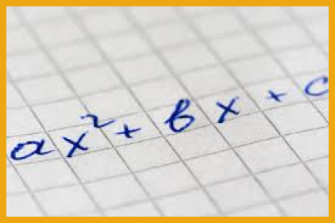

GEOMETRIA ANALÍTICA
Expressões algébricas são expressões matemáticas que apresentam números, letras e operações.
As expressões desse tipo são usadas com frequência em fórmulas e equações.
As letras que aparecem em uma expressão algébrica são chamadas de variáveis e representam um valor
desconhecido.
Os números escritos na frente das letras são chamados de coeficientes e deverão ser multiplicados
pelos valores atribuídos as letras.
a= x+5
b= b2- 4ac
CÁLCULO DE UMA EXPRESSÃO ALGÉBRICA
O valor de uma expressão algébrica depende do valor que será atribuído às letras.
Para calcular o valor de uma expressão algébrica devemos substituir os valores das letras e efetuar
as operações indicadas. Lembrando que entre o coeficiente e a letras, a operação é de multiplicação.
Exemplo
O perímetro de um retângulo é calculado usando a fórmula:
Substituindo as letras com os valores indicados, encontre o perímetro dos seguintes retângulos
Simplificação de Expressões Algébricas
Podemos escrever as expressões algébricas de forma mais simples somando seus termos semelhantes
(mesma parte literal).
Para simplificar iremos somar ou subtrair os coeficientes dos termos semelhantes e repetir a parte
literal.
Exemplos
a) 3xy + 7xy⁴ - 6x³y + 2xy - 10xy⁴ = (3xy + 2xy) + (7xy⁴ - 10xy⁴) - 6x³y = 5xy - 3xy⁴ - 6x³y
b) ab - 3cd + 2ab - ab + 3cd + 5ab = (ab + 2ab - ab + 5ab) + (- 3cd + 3cd) = 7ab
FATORAÇÃO DE EXPRESSÕES ALGÉBRICAS
Fatorar significa escrever uma expressão como produto de termos.
Transformar uma expressão algébrica em uma multiplicação de termos, frequentemente nos permite
simplificar a expressão.
Para fatorar uma expressão algébrica podemos usar os seguintes casos:
Fator comum em evidência: ax + bx = x . (a + b)
Agrupamento: ax + bx + ay + by = x . (a + b) + y . (a + b) = (x +
y) . (a + b)
Trinômio Quadrado Perfeito (Adição): a² + 2ab + b² = (a + b)²
Trinômio Quadrado Perfeito (Diferença): a2 - 2ab + b² = (a - b)²
Diferença de dois quadrados: (a + b) . (a - b) = a² - b²
Cubo Perfeito (Soma): a³ + 3a²b + 3ab² + b³ = (a + b)³
Cubo Perfeito (Diferença): a³ - 3a²b + 3ab² - b³ = (a - b)³
Os números escritos na frente das letras são chamados de coeficientes e deverão ser multiplicados
pelos valores atribuídos as letras.
Exemplos
a) x + 5
b) b2 - 4ac
MONÔMIOS
Quando uma expressão algébrica apresenta apenas multiplicações entre o coeficiente e as letras (parte
literal), ela é chamada de monômio.
Exemplos
a) 3ab
b) 10xy²z³
c) bh (quando não aparece nenhum número no coeficiente, seu valor é igual a 1)
Os monômios semelhantes são os que apresentam a mesma parte literal (mesmas letras com mesmos
expoentes).
Os monômios 4xy e 30xy são semelhantes. Já os monômios 4xy e 30x²y³ não são semelhantes, pois as
letras correspondentes não possuem o mesmo expoente.
Quando uma expressão algébrica possui somas e subtrações de monômios não semelhantes é chamada de
polinômio:
Exemplos
a) 2xy + 3 x²y - xy³
b) a + b
c) 3abc + ab + ac + 5 bc
semelhantes e repetindo a parte literal.
Exemplo
a) Somar (2x² + 3xy + y²) com (7x² - 5xy - y²)
(2x² + 3xy + y²) + (7x² - 5xy - y²) = (2 + 7) x² + (3 - 5) xy + (1 - 1) y² = 9x² - 2xy
b) Subtrair (5ab - 3bc + a²) de (ab + 9bc - a³)
É importante observar que o sinal de menos na frente dos parênteses inverte todos os sinais de dentro dos parênteses.
(5ab - 3bc + a²) - (ab + 9bc - a³) = 5ab - 3bc + a² - ab - 9bc + a³ =
(5 - 1) ab + (- 3 - 9)bc + a² + a³ = 4ab -12bc + a² + a³
Multiplicação
A multiplicação algébrica é feita multiplicando-se termo a termo.
Para multiplicar a parte literal, usamos a propriedade da potenciação para multiplicação de mesma base: "repete-se a base e soma-se os expoentes".
Exemplo
Multiplicar (3x² + 4xy) com (2x + 3)
(3x² + 4xy) . (2x + 3) = 3x² . 2x + 3x² . 3 + 4xy . 2x + 4xy . 3 = 6x³ + 9x² + 8x²y + 12xy
Divisão de um polinômio por um monômio
A divisão de um polinômio por um monômio é feita dividindo os coeficientes do polinômio pelo coeficiente do monômio. Na parte literal, usa-se a propriedade da divisão de potência de mesma base (repete-se a base e subtrai os expoentes).
Para melhorar seus estudos...
Matemática pode ser um conteúdo difícil. Para aumentar seu aprendizado, acesse ao mapa mental e a playlist de vídeo aulas sobre este assunto:
Mapa mental playlist de videoaulas